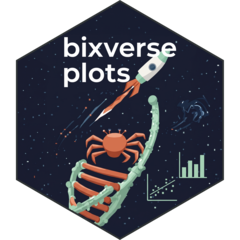

Heatmap of marker genes x cells across groups
heatmap_plot_sc.RdThe classic marker heatmap to show which cluster is what: genes as rows,
cells as columns, cells grouped by grouping_variable with white gaps and a
colour strip per group. With feature_grouping the genes get grouped per
cell type, too. Every block of cell group x gene group is drawn as one
raster, not one tile per cell.
PDF viewers tend to smooth embedded rasters. If the blocks look blurry in a PDF, save as PNG instead.
Usage
heatmap_plot_sc(
object,
features,
grouping_variable,
feature_labels = NULL,
feature_grouping = NULL,
scale = TRUE,
clip = 2.5,
modality = c("rna", "adt"),
max_cells_per_group = NULL,
seed = 42L,
group_gap = 0.002,
show_feature_labels = NULL,
palette = c("diverging", "spectral", "viridis", "sequential")
)Arguments
- object
A single cell class.
- features
Character vector. Gene IDs to plot, one row each, in this order.
- grouping_variable
String. Obs column to group the cells by. Factor levels set the group order.
- feature_labels
Optional named character vector mapping gene ids to display labels (default: NULL).
- feature_grouping
Optional named character vector mapping gene ids to grouping labels, e.g. cell type labels. If feature_labels is provided, the character vectors should contain the mapping of feature display labels to their respective groups (e.g. c(CD3E = "T cell", CD8A = "T cell", MS4A1 = "B cell", ...). Groups are ordered by first appearance. (default: NULL).
- scale
Boolean. Whether to z-score the expression values per gene.
- clip
Optional numeric. Clip z-scores if
scale = TRUE. Without it a handful of extreme cells flatten the colour range.- modality
String. One of
c("rna", "adt").- max_cells_per_group
Optional integer. Subsample every group to at most this many cells.
NULL(default) draws all cells.- seed
Integer. Seed for the subsampling.
- group_gap
Numeric between
[0, 0.1]. Width of each gap between groups as fraction of the axis length.0removes the gaps.- show_feature_labels
Optional boolean. Shall the gene names be shown.
NULL(default) shows them for up to 80 genes.- palette
String. Continuous palette for the expression values. One of
c("diverging", "spectral", "viridis", "sequential"), seebx_colors().
Value
A ggplot object.